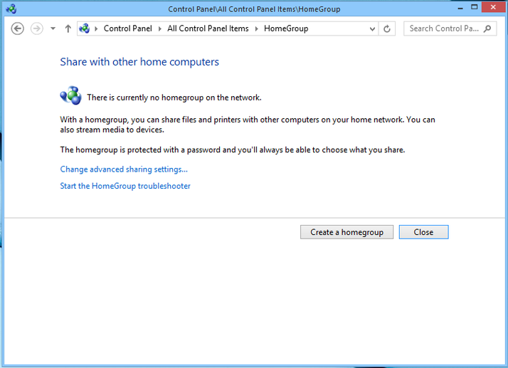
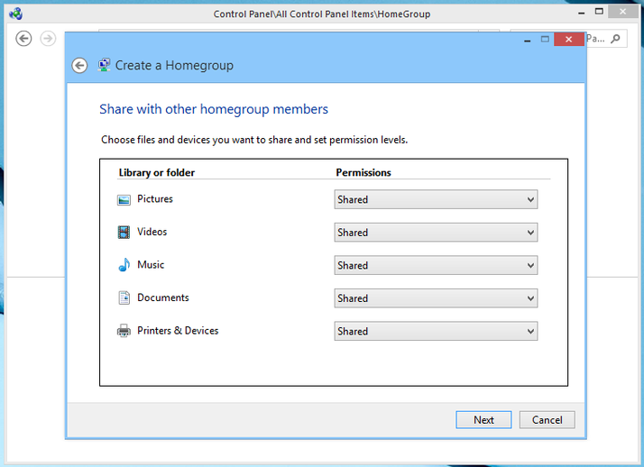
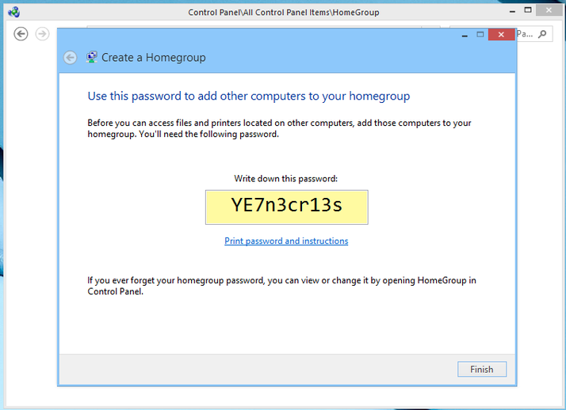
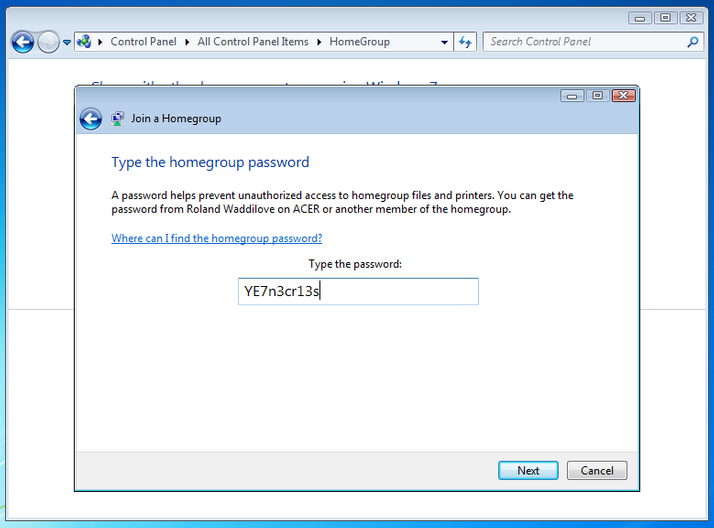

How To Set Up Your New Computer!!!
Part Three: Sharing Files
So, you got your computer onto your home network, and you can downlaod any and all applications you wish. It seems like you are pretty good. Unless you still need to do those first two steps.
- Click here to learn to set up and connect your computer to Internet.
- Click here to learn to download applications and softwares.
There. Now you are most definetly done the first two parts. Now, here's a question I can practically hear you asking. What happens if I have more than one computer on the same network and I want to connect them all to one printer and share files between them? Well, luckily for you, that is what this final page is about! So, let's do this!
Sharing files between computers on the same network
- Now we make a homegroup. Pick one computer that you want to set up your homegroup on. Power it on and open the Control Panel and then open Homegroup. If one is already running, you can use the option to leave it or show the password. If there is none, we make one, which we will be doing. This is how it will look on a computer running Windows 8.

- Homegroup shares libraries, folders, printers and devices. A list will show and you can set permissions to choose which items you want to share with other people. In this case, you will probably want to share everything.

- Your homegroup will be assigned a password. Your other computers will use this password to join the homegroup.

- Your other computers will automatically detect that a homegroup was created. Just enter your password into each computer you want to be apart of your homegroup.

Congrats! You've created a homegroup annd now all your computers will share files and printers! That's the last step in your set up process. I hope this tutorial was helpful to you.
Picture Source